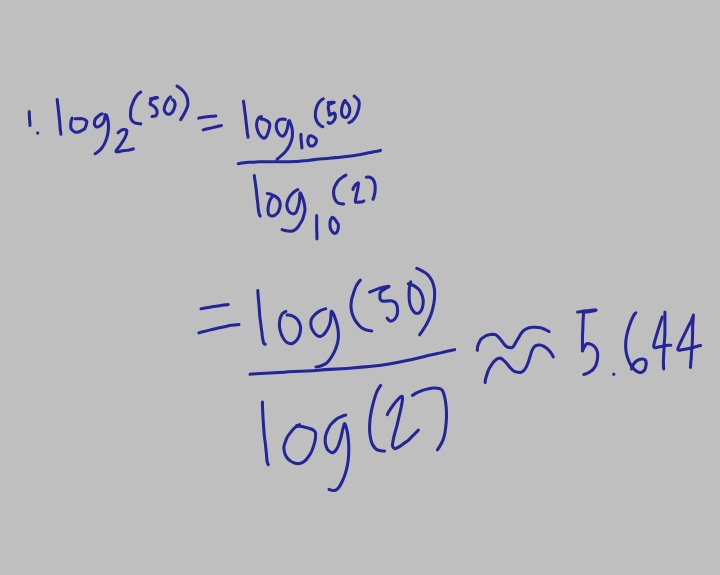
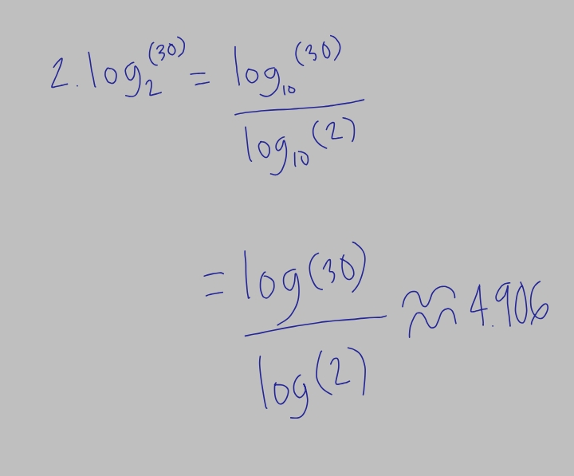
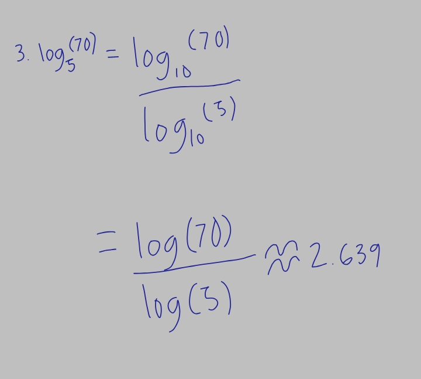
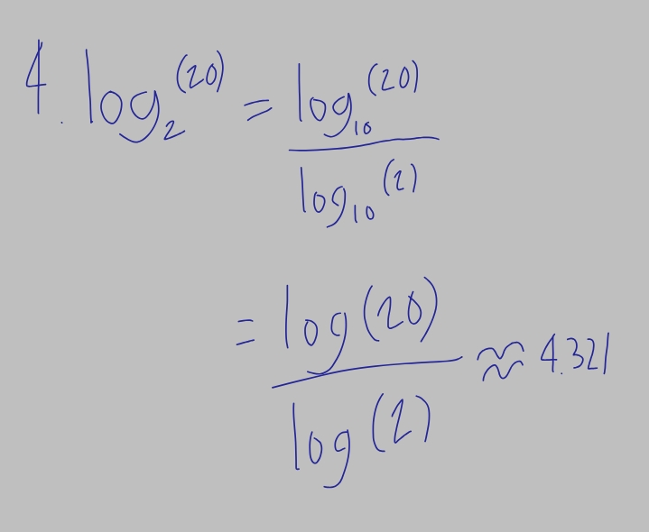
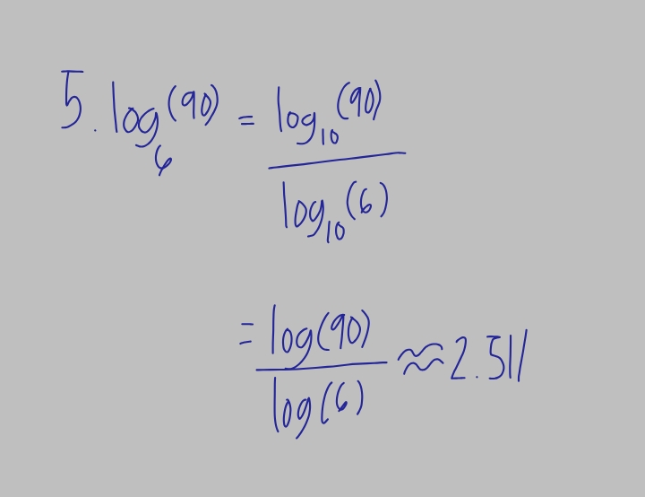

What is Change of Base Rule
What Is Change of Base Formula? The change of base formula is used to write a logarithm of a number with a given base as the ratio of two logarithms each with the same base that is different from the base of the original logarithm
Example




